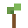
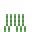
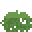
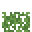
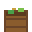
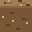
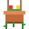

Dirt
Dirt is a block you can place. Soft ground. Grass spreads onto it, and seeds grow in it once tilled.
How to get it
- Mined from Grass
- Mined from Tilled soil
Used to make
 Red brick ×2 Red brick ×2 |  Dirt ×2 + Dirt ×2 +  Stone Stone | Furnace |
 Sapling | Apple + Dirt | By hand |
| Tall grass ×2 | Wheat seeds + Dirt | By hand |
 Fern | Wheat seeds + Dirt | By hand |
 Bush | Wheat seeds ×2 + Dirt | By hand |
 Berry bush | Berries ×3 + Dirt | By hand |
| Herb plant | Herb ×2 + Dirt | By hand |
 Composter | Oak planks ×4 + Dirt ×4 | Workbench |
 Dirt path ×4 | Dirt ×4 | By hand |
| Clay vase |  Sand ×2 + Dirt ×4 Sand ×2 + Dirt ×4 | Furnace |
| Painted amphora | Sand ×6 + Dirt ×9 +  Coal ×3 Coal ×3 | Furnace |
| Potted fern | Dirt ×4 + Fern ×2 | Workbench |
 Potted cactus Potted cactus | Dirt ×6 + Cactus ×6 | Workbench |
 Hanging planter | Dirt ×2 + Wool ×2 + Red flower ×2 + Yellow flower ×2 | Loom |
| Potted rose | Dirt ×2 + Sand ×2 | Workbench |
| Potted sunflower | Dirt ×2 + Sand ×2 | Workbench |
| Potted tulip | Dirt ×2 + Sand ×2 | Workbench |
| Potted lavender | Dirt ×2 + Sand ×2 | Workbench |
| Potted shrub | Dirt ×2 + Sand ×2 | Workbench |
| Potted palm | Dirt ×2 + Sand ×2 | Workbench |